bandstructure module¶
This module, bandstructure.py contains the setup
and calculation of bandstructure related properties. This
also include for instance the calculation of the
density of states.
-
class
bandstructure.Bandstructure(lattice, param, location=None, filename=None)¶ Bases:
objectHandles the read in, generation and storrage of the bandstructure and its relevant parameters.
Parameters: lattice : object
A Lattice() object.
param : object
A Param() object.
filename : string, optional
Filename and relative path for the input file that is to be read.
Notes
The YAML general and bandstructure configuration (param.yml and bandparams.yml, respectively by default) files are read and the setup of the bandstructure is determined from these files.
If an external band structure is supplied, i.e. from VASP (vasprun.xml is sufficient) the bandparams file is still needed as it contains parameters used to set up the scattering properties etc. at a later stage.
Presently the following combination is possible:
- Parametrized bands (parabolic, non-parabolic, Kane and a k^4 model)
- Tight binding bands from PythTB, including more generalized Wannier functions
- VASP input from the VASP XML file (only this file is needed)
- Numpy input files
A combination of parametrized and tight binding bands is possible.
If another code is to be used to provide the bandstructure parameters, please consult
interfaceand use that as a base to write a new bandstructure_yourcode function in that module and include a call to this function in the initializer below.Todo
Add the posibility to add parameterized bands to the e.g. VASP bandstructure. Usefull for instance to investigate defects etc. that was not included in the calculation.
Todo
Add interfaces to other first principle codes.
-
apply_scissor_operator(energies=None)¶ Apply scissor operator to blue or redshift the conduction band energies.
Parameters: energies : ndarray, optional
Dimension: (N,M)The energy dispersion for N bands at M k-points. Defaults to the energies stored in the current Bandstructure() object.
Returns: None
Notes
Warning
Please beware that this is a rather brutal (but usefull) operation. Make sure that the valence band maximum and conduction band minimum is fetched correctly. One way to check that this works is to plot the energies along a representative direction before and after the scissor operator have been executed.
-
calc_density_of_states(spin_degen=False, return_data=False, num_samples=None, auto_scale=False, transport=False, integral_method=None, interpol_method=None, interpol_type=None)¶ Calculate the density of states.
Parameters: spin_degen : boolean, optional
If True, include spin degeneracy (basically a factor of 2 in the DOS amplitude).
return_data : boolean, optional
If True, return the density of states data instead of storing it in the current Bandstructure() object. If False, set dos_energies, dos_partial and dos_total in the current Bandstructure() object.
num_samples : integers, optional
Number of energy samples. Necessary if auto_scale is set. Otherwise the dos_num_samples in the parameter file is used.
auto_scale : boolean, optional
If True, auto scale the energy axis to cover the supplied band structure. Otherwise the dos_e_min and dos_e_max from the parameter file is used to set up the energy range unless transport is set which overrides this.
transport : bool, optional
Set to True if the density of states calculated are to be used in transport calculations (i.e. to set up the scattering). This ensures that the energy range covers the requested range of chemical potential pluss / minus ‘transport_energycutband’ and is then padded with zeros for the remaining values down and up to the minimum and maximum values present in the energies entry of the Bandstructure() object. Using this option make it possible to calculate the density of states on a fine grid in the relevant transport region.
integral_method : string, optional
The integration method used to calculate the DOS:
“trapz” trapeziodal integration, usesscipy.integrate.trapz()“simps” simpson integration, usesscipy.integrate.simps()“romb” romberb integration, usesscipy.integrate.romb()“tetra” tetrahedron method, uses the linear tetrahedron method implemented in Spglib (up to version 1.7.4) by A. Togo.“cubature” cubature method, using the Cubature packages written by Steven G. Johnson.If not supplied, set according to dos_integrating_method in the general configuration file.
interpol_method : string, optional
The interpolation method used for the cubature method: (all methods from the Wildmagic / GeometricTools package). Now, only the option “wildmagic” is supported. If not supplied, set according to dos_interpolate_method in the general configuration file.
interpol_type : string, optional
The interpolation method used for the cubature method (all methods rely on the GeometricTools package):
“akima” Akima interpolation method“trilinear” trilinear interpolation method“tricubic_exact” exact analytic tricubic interpolation method“tricubic_bspline” bspline tricubic interpolation methodIf not supplied, set according to dos_interpolate_method in the general configuration file.
Returns: dos_energies : ndarray
Dimension: (N)Array containing the density of states energies, where N is num_samples or set by the sampling determined in the general configuration file if auto_scale is set to False.
dos_total : ndarray
Dimension: (N)Array containing the total density of states per volume unit (units 1 / eV / AA ^ 3) at N sampled energy points, where N is determined from dos_energies.
dos_partial : ndarray
Dimension: (M, N)Array containing the partial (for each band index M) density of states per volume unit (1 / eV / AA ^ 3) at N sampled energy points, where N is determined from dos_energies.
-
calc_effective_mass()¶ Calculates the effective mass tensor. Currently the effective mass tensor is not diagonalized.
Parameters: None Returns: None Notes
Upon complettion the effective mass is stored in the current Bandstructure() object.
Also, the velocities have to be precalculated before calling this routine.
-
calc_velocities(velocities=None, store=True)¶ Calculate the electron group velocities from the electron energy dispersion
Parameters: velocities : ndarray, optional
Dimension: (N, M)Contains the group velocity along a specific direction for N bands and M k-points. If supplied the velocities of the velocities are calculated, or more specifically the inverse effective mass tensor (without prefactor)
store : boolean, optional
If True, store the calculated velocities in the active Bandstructure() object, else return the velocity array. Defaults to True.
Returns: velocities : ndarray, optional
Dimension: (N, 3, M)The velocities of the velocity. Only returned if store is set to False.
Notes
Does not call any interpolation routines such that the velocities can be extracted directly from the electron energy dispersion by numerical differentiation. Uses the
gradient()from NumPy.Overwrites any entry of exising velocities in bs and sets gen_velocities to False if velocities is not supplied.
-
check_dos_energy_range(remin, remax)¶ Check that the energy grid of the density of states covers the range of the supplied paramters.
Parameters: remin : float
The energy in eV for the lowest requested energy.
remax : float
The energy in eV for the highest requested energy.
Returns: within : boolean
True if the endpoints are within the energy range of the stored density of states, False ortherwise.
-
check_energyshifts()¶ Check the energy shift parameters in the parameter file for consistency.
Parameters: None Returns: None
-
check_velocities(cutoff)¶ Check that there exists realistic values for the band velocities.
Parameters: cutoff : float
Cutoff value for the test in eVAA units.
Returns: boolean
True if values are above cutoff, False otherwise.
-
fetch_dos_energies(e_min=None, e_max=None, num_samples=None, auto_scale=False)¶ Set up the energy array for density of states calculations.
Parameters: e_min : float
The mininum energy in eV.
e_max : float
The maximum energy in eV.
num_samples : integer
The N number of samples between e_min and e_max.
auto_scale : boolean
If True, set the energy scale from the supplied band structure, otherwise set the scale according to e_min and e_max.
Returns: ndarray
Dimension: (N)The N energies in eV where density of states calculations are to be performed.
-
fetch_energies_along_line(kstart, kend, samplings=None, itype=None, itype_sub=None)¶ Calculate the energy dispersions along specific k - points.
Parameters: kstart : ndarray
Dimension: (3)Direct k - point coordinate of the start point of line extraction.
kend : ndarray
Dimension: (3)Direct k - point coordinate of the end point of line extraction.
samplings : int, optional
The number of N samples along the line. If not specified the variable is set to the the num_kpoints_along_line parameter in params.yml
itype : string, optional
Can be any of:{“linearnd”, “interpn”, “rbf”, “einspline”, “wildmagic”, “skw”}The type of interpolate method to use. If not set, the parameter dispersion_interpolate_method in the general configuration file sets this.
itype_sub : string, optional
Can be any of:{“nearest”, “linear”}, when itype is set to interpn.{“multiquadric”, “inverse_multiquadric”, “gaussian”, “linear”,“cubic”, “quintic”, “thin_plate”}, when itype is set to rbfand when the Scipy variety is used (the alglib variable setto False in theinterpolate()function). If alglib isset to True (default), then itype_sub does not have to be set.{“natural”, “flat”, “periodic”, “antiperiodic”}, when itypeis set to einspline.{“trilinear, tricubic_exact, tricubic_bspline, akima”},when itype is set to wildmagic.The subtype of the interpolation method.
Returns: energies : ndarray
Dimension: (N, M)The energy dispersions in eV along a line for N bands and M k - points, defined by the num_kpoints_along_line in the general configuration file.
kpts : ndarray
Dimension: (N, 3)The k - point mesh for the line extraction in cartesian coordinates.
See also
Notes
The routine
interpolate()is used to perform the interpolation of the data along the line.
-
fetch_energies_at_kpoints(kpoint_mesh, itype=None, itype_sub=None)¶ Calculate the energy dispersions at specific k - points by interpolation.
Parameters: kpoint_mesh : ndarray
Dimension: (N, 3)The N k - point coordinates in cartesian coordinates.
itype : string, optional
Can be any of:{“linearnd”, “interpn”, “rbf”, “einspline”, “wildmagic”, “skw”}The type of interpolate method to use. If not set, the parameter dispersion_interpolate_method in the general configuration file sets this.
itype_sub : string, optional
Can be any of:{“nearest”, “linear”}, when itype is set to interpn.{“multiquadric”, “inverse_multiquadric”, “gaussian”, “linear”,“cubic”, “quintic”, “thin_plate”}, when itype is set to rbfand when the Scipy variety is used (the alglib variable setto False in theinterpolate()function). If alglib isset to True (default), then itype_sub does not have to be set.{“natural”, “flat”, “periodic”, “antiperiodic”}, when itypeis set to einspline.{“trilinear, tricubic_exact, tricubic_bspline, akima”},when itype is set to wildmagic.The subtype of the interpolation method.
Returns: energies : ndarray
Dimension: (N, M)The energies in eV for each of the N bands and M k - points.
See also
Notes
The routine
interpolate()is used to perform the interpolation.
-
fetch_min_max_energy()¶ Returns the min and max of the energy in the current Bandstructure() object.
Parameters: None
Returns: emin : float
The minimum energy in eV located in the current Bandstructure() object.
emax : float
The maximum energy in eV located in the current Bandstructure() object.
-
fetch_velocities_along_line(kstart, kend, itype=None, itype_sub=None)¶ Calculate the velocity dispersion along a line in reciprocal space.
Parameters: kstart : ndarray, optional
Dimension: (3)The start k - point in cartesian coordinates.
kend : ndarray
Dimension: (3)The end k - point in cartesian coordinates.
itype : string, optional
Can be any of:{“linearnd”, “interpn”, “rbf”, “einspline”, “wildmagic”, “skw”}The type of interpolate method to use. If not set, the parameter dispersion_interpolate_method in the general configuration file sets this.
itype_sub : string, optional
Can be any of:{“nearest”, “linear”}, when itype is set to interpn.{“multiquadric”, “inverse_multiquadric”, “gaussian”, “linear”,“cubic”, “quintic”, “thin_plate”}, when itype is set to rbfand when the Scipy variety is used (the alglib variable setto False in theinterpolate()function). If alglib isset to True (default), then itype_sub does not have to be set.{“natural”, “flat”, “periodic”, “antiperiodic”}, when itypeis set to einspline.{“trilinear, tricubic_exact, tricubic_bspline, akima”},when itype is set to wildmagic.The subtype of the interpolation method.
Returns: velocities : ndarray
Dimension: (N, 3, M)The group velocity in units of eVAA along a line for N bands and M k - points, defined by the num_kpoints_along_line in the general configuration file.
kpts : ndarray
Dimension: (M, 3)The kpoints where the group velocity was calculated.
Notes
The
interpolate()is used to perform the interpolation of the data along the line.
-
fetch_velocities_at_kpoints(kpoint_mesh, itype=None, itype_sub=None)¶ Calculate the velocity dispersions at specific k - points.
Parameters: kpoint_mesh : ndarray
Dimension: (N, 3)The k - point mesh for extraction in cartesian coordinates.
itype : string, optional
Can be any of:{“linearnd”, “interpn”, “rbf”, “einspline”, “wildmagic”, “skw”}The type of interpolate method to use. If not set, the parameter dispersion_interpolate_method in the general configuration file sets this.
itype_sub : string, optional
Can be any of:{“nearest”, “linear”}, when itype is set to interpn.{“multiquadric”, “inverse_multiquadric”, “gaussian”, “linear”,“cubic”, “quintic”, “thin_plate”}, when itype is set to rbfand when the Scipy variety is used (the alglib variable setto False in theinterpolate()function). If alglib isset to True (default), then itype_sub does not have to be set.{“natural”, “flat”, “periodic”, “antiperiodic”}, when itypeis set to einspline.{“trilinear, tricubic_exact, tricubic_bspline, akima”},when itype is set to wildmagic.The subtype of the interpolation method.
Returns: velocities : ndarray
Dimension: (N, 3, M)The group velocity in units of eVAA at the N bands for M k - points.
Notes
The
interpolate()is used to perform the interpolation.
-
gaussian(energy, energy_ref, smearing)¶ Returns the value of a Gaussian function.
Parameters: energy : float
The energy in eV.
energy_ref : float
The reference energy in eV.
smearing : float
The smearing factor in eV.
Returns: float
The value in eV.
-
gen_analytic_band(band)¶ Generate an analytical energy and velocity dispersion.
Parameters: band : int
The band index used to fetch band parameters in bandparams.yml.
Returns: energy : ndarray
Dimension: (M)The energy dispersion in eV at M k-points.
velocity : ndarray
Dimension: (M,3)The group velocity in eVAA of the energy dispersion (without the 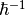 factor).
-
gen_bands()¶ Generates the set of energy and velocity dispersions.
Parameters: None
Returns: energies : ndarray
Dimension: (N,M)Contains the energy dispersions in eV for N bands at M k-points.
velocities : ndarray
Dimension: (N,M,3)Contains the group velocities in eVAA of the energy dispersions (without the factor).
tb_band : ndarray
Dimension: (N)Contains boolean values of True for band indexes that are tight binding bands, False otherwise.
-
gen_dos()¶ Generates the density of states for the analytic models
Parameters: None
Returns: dos : ndarray
Dimension: (N, M)Contains the density of states for N bands at M dos_num_samples from dos_e_min to dos_e_max. The number of samplings and their range is set it general configuration file. Units are per volume unit, 1/eV/AA^3.
dos_energies : ndarray
Dimension: (M)Contains the energy samplings of which dos was calculated in units of eV.
Notes
Currently only the parabolic/spherical models are implemented.
Todo
Also implement the non-parabolic alpha models
-
interpolate(iksampling=None, ienergies=True, ivelocities=False, itype=None, itype_sub=None, kpoint_mesh=None, store_inter=False, energies=None)¶ Interpolates the energies and velocity dispersion.
Parameters: iksampling : ndarray, optional
Dimension: (3)Contains the interpolated k - point mesh sampling values. Does not have to be set if line extraction performed (full grid is instead supplied in line_mesh).
ienergies : boolean
If True, interpolate the energies, if not, do not.
ivelocities : boolean
If True, interpolate the velocities, if not, do not
itype : string, optional
Can be any of: {“linearnd”, “interpn”, “rbf”, “einspline”, “wildmagic”, “skw”} The type of interpolate method to use. If not set, the parameter dispersion_interpolate_method in the general configuration file sets this.
itype_sub : string, optional
Can be any of:{“nearest”, “linear”}, when itype is set to interpn.{“multiquadric”, “inverse_multiquadric”, “gaussian”, “linear”,“cubic”, “quintic”, “thin_plate”}, when itype is set to rbfand when the Scipy variety is used (the alglib variable setto False in theinterpolate()function). If alglib isset to True (default), then itype_sub does not have to be set.{“natural”, “flat”, “periodic”, “antiperiodic”}, when itypeis set to einspline.{“trilinear, tricubic_exact, tricubic_bspline, akima”},when itype is set to wildmagic.The subtype of the interpolation method.
kpoint_mesh : ndarray, optional
Dimension: (M, 3)Supplied k - point grid for extraction as an alternative to iksampling. Should be supplied in cartesian coordinates and should not extend the border of the original grid. Usefull for line extraction etc.
store_inter : boolean, optional
Store the new interpolated energies and velocities in the supplied object. Also modifies the current Lattice() object with the new grid etc. if that has been modified. Defaults to False.
energies : ndarray, optional
Dimension: (N,J)An input array containing the energies (or some other) quantity that can fly through with the same structure, e.g. the velocities along a certain direction for N bands and J k-points.
Returns: ien, ivel : ndarray, ndarray
Dimension: (N,M), (N,3,M)The energy dispersions in eV, and group velocities in eVAA along indexes each axis of the reciprocal basis are returned for N bands and M new k - points if velocities is supplied, or if the gen_velocities tag is set to True in the current Bandstructure() object.
ien, False, False, False : ndarray, boolean, boolean, boolean
Dimension: (N,M)The energy dispersions in eV for N bands and M new k-points if velocities is not supplied or gen_velocities is set to False.
See also
linearnd,interpn,rbf,
-
locate_band_gap()¶ ” Calculate the band gap.
Parameters: None
Returns: float
The band gap in eV
-
locate_bandgap(energies=None, occ=None)¶ Locate the band gap.
Parameters: energies : ndarray, optional
Dimension: (N,M)The energy dispersion in eV for N bands at M k-points. Defaults to the energies stored in the current Bandstructure() object.
occ : ndarray, optional
Dimension: (N,M)The occupancy for N bands at M k-points. Defaults to the occ stored in the current Bandstructure() object.
Returns: vbm_energy : float
The valence band maximum in eV.
bandgap : float
The band gap in eV.
-
locate_cbm(energies, occ)¶ Locate the conduction band minimum.
Parameters: energies : ndarray
Dimension: (N,M)The energy dispersion in eV for N bands at M k-points.
occ : ndarray
Dimension: (N,M)The occupancy for N bands at M k-points.
Returns: energy : float
The conduction band minimum in eV.
band : int
The band index of the conduction band minimum.
kpoint : int
The kpoint index of the conduction band minimum.
-
locate_vbm(energies, occ)¶ Locate the valence band maximum.
Parameters: energies : ndarray
Dimension: (N,M)The energy dispersion in eV for N bands at M k-points.
occ : ndarray
Dimension: (N,M)The occupancy for N bands at M k-points.
Returns: energy : float
The valence band maximum in eV
band : int
The band index of the valence band maximum.
kpoint : int
The kpoint index of the valence band maximum.
-
non_parabolic_energy_1(k, effmass, a, e0=0.0, kshift=[0.0, 0.0, 0.0])¶ Calculates a spherical energy dispersion, both parabolic and non-parabolic.
Parameters: k : ndarray
Dimension: (N,3)Contains the N k-point coordinates (cartesian) where the dispersion is to be evaluated.
effmass : ndarray
Dimension: (3)Contains the effective mass along the three k-point directions. Only the diagonal components of the effective mass tensor is used. In units of the free electron mass.
a : ndarray
Dimension: (3)The non parabolic coefficients in front of the 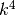 term.
e0 : float, optional
Shift of the energy scale in eV.
kshift : ndarray, optional
Dimension: (3)The shift along the respective k-point vectors in cartesian coordinates.
Returns: ndarray
Dimension: (N)Contains the energy dispersion in eV at each N k-points.
Notes
This routines calculates the energy dispersion according to
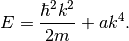
Setting
 to zero yields a spherical parabolic
dispersion.
to zero yields a spherical parabolic
dispersion.
-
non_parabolic_energy_2(k, effmass, a)¶ Calculates a non-parabolic energy dispersion.
Parameters: k : ndarray
Dimension: (N,3)Contains the N k-point cartesian coordinates where the dispersion is to be evaluated.
effmass : float
The effective mass in units of the free electron mass.
a : float
The
 factor.
factor.Returns: ndarray
Dimension: (N)Contains the energy in eV at each N k-points for each direction defined by the direction of the k-point unit axis.
Notes
This routine calculates the energy dispersion according to
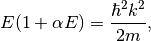
where
is a parameter that adjust the
non-parabolicityNote that if
 is negative (valence bands), the square
root is undefined for 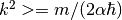, which is
a rather limited k-space volume. Consider (either or
negative).
is negative (valence bands), the square
root is undefined for 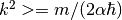, which is
a rather limited k-space volume. Consider (either or
negative).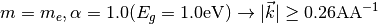
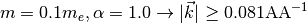
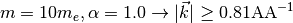
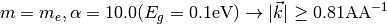
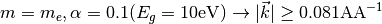
For a simple cell of 10 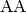, the BZ border is typically at 0.31 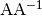 and for a smaller cell, e.g. 3.1 , the BZ border is here at 1.0 .
Warning
In order to be able to use all values of
, we return a linear 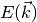
in the undefined region (the last defined value
of is used). This is highly
unphysical, so we print a warning to notice the user
-
non_parabolic_velocity_1(k, effmass, a, kshift=[0.0, 0.0, 0.0])¶ Calculates the group velocity for the energy dispersion generated in
non_parabolic_energy_1(), both parabolic and non-parabolic.Parameters: k : ndarray
Dimension: (N,3)Contains the N k-point in cartesian coordinates where the dispersion is to be evaluated.
effmass : ndarray
Dimension: (3)Contains the effective mass along the three k-point directions. Only the diagonal components of the effective mass tensor is used. In units of the free electron mass.
a : ndarray
Dimension: (3)The non parabolic coefficients in front of the term.
kshift : ndarray, optional
Dimension: (3)The shift along the respective k-point vectors in cartesian coordinates.
Returns: vx, vy, vz : ndarray, ndarray, ndarray
Dimension: (N),(N),(N)Contains the group velocity at each N k-points for each direction defined by the direction of the k-point unit axis. Units of eVAA.
Notes
This routines calculates the group velocity according to
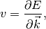
where
Setting
to zero yields a spherical parabolic dispersion
and thus its group velocity.Warning
The factor is not returned and
need to be included externally.
-
non_parabolic_velocity_2(k, effmass, a)¶ Calculates the group velocity for the energy dispersion generated in
non_parabolic_energy_2(), both parabolic and non-parabolic.Parameters: k : ndarray
Dimension: (N,3)Contains the N k-point in cartesian coordinates where the dispersion is to be evaluated.
effmass : float
The effective mass in units of the free electron mass.
a : ndarray
Dimension: (3)The
factor.Returns: vx, vy, vz : ndarray, ndarray, ndarray
Dimension: (N), (N), (N)The group velocity along each axis in the reciprocal unit cell. In units of eVAA.
Notes
Consult comments in
non_parabolic_energy_1()Warning
The factor is not returned and need to be included externally.
-
spherical_effective_mass(effmass_t)¶ Checks if the supplied effective mass array is spherical.
Parameters: effmass_t : ndarray
The effective mass tensor in units of the free electron mass.
Returns: boolean
True if spherical tensors, False otherwise.
-
tight_binding_energies(bandparam, location=None, filename=None)¶ This routine sets up the interface to PythTB and execute the tight binding extractions.
Parameters: bandparams : int
The index of the tight binding band, which follows the sequential index of the bandstructure configuration file, which also need to be set for the respective band due to scattering mechanisms etc.
Returns: The tight binding energy dispersions in eV on the
k-point grid storred in the current Lattice() object.
Notes
The tight binding parameters are set at the bottom of the bandstructure configuration file.
Consult the documentation for PythTB for how to set these parameters.
Todo
Extend the documentation of how to set parameters relevant to PythTB.